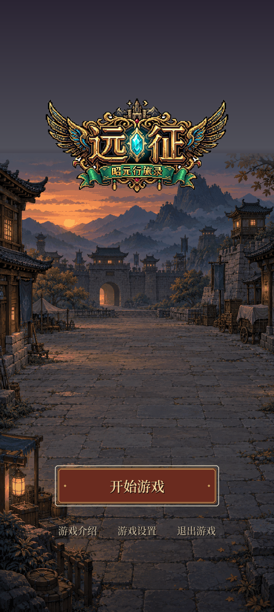

左侧为 Opus 审查的 V1，右侧为本轮修正。图片均由 Godot 实际渲染；保留原尺寸，可横向滑动。

灰度图在 Godot 内通过屏幕 shader 渲染。交互就绪图暂停了自动接触步骤，用于展示原有效距离内的按钮状态；点击已验证打开原 NPC 对话。
 修正后 · 字标、实时副标题与铜边
修正后 · 字标、实时副标题与铜边
 修正后 · 地形地图、填色图标与角标
修正后 · 地形地图、填色图标与角标